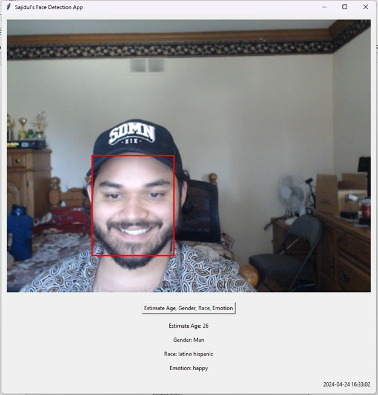
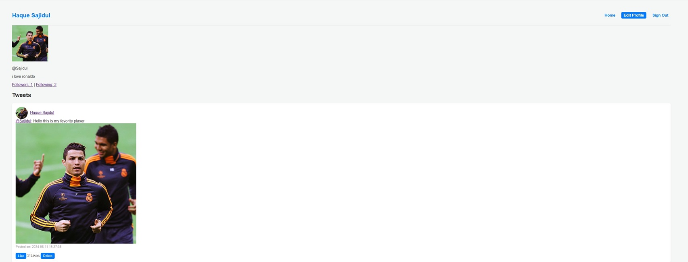

Projects
Facial Recognition App
Developed using Python, the Facial Recognition App utilizes OpenCV, tkinter, and DeepFace libraries to detect and analyze faces in real-time. The app can estimate age, gender, race, and dominant emotion from a webcam feed.
Code: Facial Recognition App GitHub
Twitter Clone linked with Database
A Twitter clone built using PHP, MySQL, JSP, and JavaScript. This web application allows users to create accounts, log in, follow/unfollow users, post tweets, like tweets, and upload images. It is fully integrated with a MySQL database for data management.
Code: Twitter Clone GitHub
Other Projects
- Python GUI Games: Chess, Hangman, Pong, Snake, Role-Playing Games
- Java GUI Games: Tic-Tac-Toe, UNO, Mafia, Snake, Word-based Games
- Ping Pong Game: An interactive Ping Pong game in Python using the Pygame library, linked with an SQL database for tracking high scores and user data.